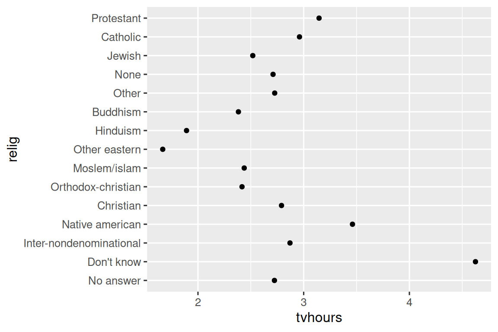

16 Factores
16.1 Introducción
Los factores se utilizan para variables categóricas, variables que tienen un conjunto fijo y conocido de valores posibles. También son útiles cuando desea mostrar vectores de caracteres en un orden no alfabético.
Comenzaremos explicando por qué se necesitan factores para el análisis de datos1 y cómo puede crearlos con factor(). Luego le presentaremos el conjunto de datos gss_cat que contiene un montón de variables categóricas para experimentar. Luego usará ese conjunto de datos para practicar la modificación del orden y los valores de los factores, antes de que terminemos con una discusión sobre los factores ordenados.
16.1.1 Requisitos previos
Base R proporciona algunas herramientas básicas para crear y manipular factores. Los complementaremos con el paquete forcats, que es parte del tidyverse principal. Proporciona herramientas para tratar con variables categóricas (¡y es un anagrama de factores!) usando una amplia gama de ayudantes para trabajar con factores.
16.2 Fundamentos de los factores
Imagina que tienes una variable que registra el mes:
x1 <- c("Dic", "Abr", "Ene", "Mar")Usar una cadena para registrar esta variable tiene dos problemas:
-
Solo hay doce meses posibles, y no hay nada que lo salve de los errores tipográficos:
x2 <- c("Dic", "Abr", "Eme", "Mar") -
No ordena de una manera útil:
sort(x1) #> [1] "Abr" "Dic" "Ene" "Mar"
Puede solucionar ambos problemas con un factor. Para crear un factor, debe comenzar creando una lista de los niveles (levels) válidos:
meses_levels <- c(
"Ene", "Feb", "Mar", "Abr", "May", "Jun",
"Jul", "Ago", "Sep", "Oct", "Nov", "Dic"
)Ahora puedes crear un factor:
Y cualquier valor que no esté en el nivel se convertirá silenciosamente a NA:
y2 <- factor(x2, levels = meses_levels)
y2
#> [1] Dic Abr <NA> Mar
#> Levels: Ene Feb Mar Abr May Jun Jul Ago Sep Oct Nov DicEsto parece arriesgado, por lo que es posible que desee utilizar forcats::fct() en su lugar:
y2 <- fct(x2, levels = meses_levels)
#> Error in `fct()`:
#> ! All values of `x` must appear in `levels` or `na`
#> ℹ Missing level: "Eme"Si omite los niveles, se tomarán de los datos en orden alfabético:
factor(x1)
#> [1] Dic Abr Ene Mar
#> Levels: Abr Dic Ene MarOrdenar alfabéticamente es un poco arriesgado porque no todas las computadoras ordenarán las cadenas de la misma manera. Entonces forcats::fct() ordena por primera aparición:
fct(x1)
#> [1] Dic Abr Ene Mar
#> Levels: Dic Abr Ene MarSi alguna vez necesita acceder directamente al conjunto de niveles válidos, puede hacerlo con levels():
levels(y2)
#> [1] "Ene" "Feb" "Mar" "Abr" "May" "Jun" "Jul" "Ago" "Sep" "Oct" "Nov" "Dic"También puedes crear un factor al leer tus datos con readr con col_factor():
csv <- "
month,value
Jan,12
Feb,56
Mar,12"
df <- read_csv(csv, col_types = cols(month = col_factor(meses_levels)))
#> Warning: One or more parsing issues, call `problems()` on your data frame for
#> details, e.g.:
#> dat <- vroom(...)
#> problems(dat)
df$month
#> [1] <NA> Feb Mar
#> Levels: Ene Feb Mar Abr May Jun Jul Ago Sep Oct Nov Dic16.4 Modificación del orden de los factores
Suele ser útil cambiar el orden de los niveles de los factores en una visualización. Por ejemplo, imagine que desea explorar la cantidad promedio de horas que pasan viendo televisión por día en todas las religiones:
relig_summary <- gss_cat |>
group_by(relig) |>
summarize(
tvhours = mean(tvhours, na.rm = TRUE),
n = n()
)
ggplot(relig_summary, aes(x = tvhours, y = relig)) +
geom_point()
Es difícil leer esta trama porque no hay un patrón general. Podemos mejorarlo reordenando los niveles de relig usando fct_reorder(). fct_reorder() toma tres argumentos:
-
.f, el factor cuyos niveles desea modificar. -
.x, un vector numérico que desea utilizar para reordenar los niveles. - Opcionalmente,
.fun, una función que se usa si hay varios valores de.xpara cada valor de.f. El valor predeterminado esmedian.
ggplot(relig_summary, aes(x = tvhours, y = fct_reorder(relig, tvhours))) +
geom_point()Reordenar la religión hace que sea mucho más fácil ver que las personas en la categoría “No sé” ven mucha más televisión, y el hinduismo y otras religiones orientales ven mucho menos.
A medida que comience a realizar transformaciones más complicadas, le recomendamos que las saque de aes() y las lleve a un paso separado de mutate(). Por ejemplo, podría reescribir el gráfico anterior como:
relig_summary |>
mutate(
relig = fct_reorder(relig, tvhours)
) |>
ggplot(aes(x = tvhours, y = relig)) +
geom_point()¿Qué sucede si creamos una gráfica similar que observa cómo varía la edad promedio según el nivel de ingresos informado?
rincome_summary <- gss_cat |>
group_by(rincome) |>
summarize(
age = mean(age, na.rm = TRUE),
n = n()
)
ggplot(rincome_summary, aes(x = age, y = fct_reorder(rincome, age))) +
geom_point()¡Aquí, reordenar arbitrariamente los niveles no es una buena idea! Esto se debe a que rincome ya tiene un orden de principios con el que no debemos meternos. Reserve fct_reorder() para factores cuyos niveles estén ordenados arbitrariamente.
Sin embargo, tiene sentido poner “No aplicable” al frente con los otros niveles especiales. Puedes usar fct_relevel(). Se necesita un factor, .f, y luego cualquier cantidad de niveles que desee mover al frente de la fila.
ggplot(rincome_summary, aes(x = age, y = fct_relevel(rincome, "No aplicable"))) +
geom_point()
#> Warning: 1 unknown level in `f`: No aplicable¿Por qué cree que la edad promedio para “No aplicable” es tan alta?
Otro tipo de reordenación es útil cuando colorea las líneas de un gráfico. fct_reorder2(.f, .x, .y) reordena el factor .f por los valores .y asociados con los valores .x más grandes. Esto hace que el gráfico sea más fácil de leer porque los colores de la línea en el extremo derecho del gráfico se alinearán con la leyenda.
by_age <- gss_cat |>
filter(!is.na(age)) |>
count(age, marital) |>
group_by(age) |>
mutate(
prop = n / sum(n)
)
ggplot(by_age, aes(x = age, y = prop, color = marital)) +
geom_line(linewidth = 1) +
scale_color_brewer(palette = "Set1")
ggplot(by_age, aes(x = age, y = prop, color = fct_reorder2(marital, age, prop))) +
geom_line(linewidth = 1) +
scale_color_brewer(palette = "Set1") +
labs(color = "marital") ![Un gráfico de líneas con la edad en el eje x y la proporción en el eje y. Hay una línea para cada categoría de estado civil: sin respuesta, nunca casado, separado, divorciado, viudo y casado. Es un poco difícil leer la gráfica porque el orden de la leyenda no está relacionado con las líneas de la gráfica. Reorganizar la leyenda hace que el gráfico sea más fácil de leer porque los colores de la leyenda ahora coinciden con el orden de las líneas en el extremo derecho del gráfico. Puede ver algunos patrones que no sorprenden: la proporción de personas que nunca se casaron disminuye con la edad, los casados forman una U invertida y los viudos comienzan con un nivel bajo pero aumentan abruptamente después de los 60 años.](factors_files/figure-html/unnamed-chunk-21-1.png)
![Un gráfico de líneas con la edad en el eje x y la proporción en el eje y. Hay una línea para cada categoría de estado civil: sin respuesta, nunca casado, separado, divorciado, viudo y casado. Es un poco difícil leer la gráfica porque el orden de la leyenda no está relacionado con las líneas de la gráfica. Reorganizar la leyenda hace que el gráfico sea más fácil de leer porque los colores de la leyenda ahora coinciden con el orden de las líneas en el extremo derecho del gráfico. Puede ver algunos patrones que no sorprenden: la proporción de personas que nunca se casaron disminuye con la edad, los casados forman una U invertida y los viudos comienzan con un nivel bajo pero aumentan abruptamente después de los 60 años.](factors_files/figure-html/unnamed-chunk-21-2.png)
Finalmente, para gráficos de barras, puede usar fct_infreq() para ordenar niveles en frecuencia decreciente: este es el tipo más simple de reordenamiento porque no necesita variables adicionales. Combínelo con fct_rev() si los quiere en frecuencia creciente para que en el gráfico de barras los valores más grandes estén a la derecha, no a la izquierda.
gss_cat |>
mutate(marital = marital |> fct_infreq() |> fct_rev()) |>
ggplot(aes(x = marital)) +
geom_bar()16.4.1 Ejercicios
Hay algunos números sospechosamente altos en
tvhours. ¿Es la media un buen resumen?Para cada factor en
gss_cat, identifique si el orden de los niveles es arbitrario o basado en principios.¿Por qué mover “No aplicable” al frente de los niveles lo movió al final de la gráfica?
16.5 Modificar los niveles de los factores
Más poderoso que cambiar el orden de los niveles es cambiar sus valores. Esto le permite aclarar etiquetas para publicación y contraer niveles para visualizaciones de alto nivel. La herramienta más general y poderosa es fct_recode(). Le permite recodificar, o cambiar, el valor de cada nivel. Por ejemplo, tome la variable partyid del marco de datos gss_cat:
gss_cat |> count(partyid)
#> # A tibble: 10 × 2
#> partyid n
#> <fct> <int>
#> 1 No answer 154
#> 2 Don't know 1
#> 3 Other party 393
#> 4 Strong republican 2314
#> 5 Not str republican 3032
#> 6 Ind,near rep 1791
#> # ℹ 4 more rowsLos niveles son breves e inconsistentes. Modifiquémoslos para que sean más largos y usemos una construcción paralela. Como la mayoría de las funciones de renombrar y recodificar en tidyverse, los valores nuevos van a la izquierda y los valores antiguos van a la derecha:
gss_cat |>
mutate(
partyid = fct_recode(partyid,
"Republican, strong" = "Strong republican",
"Republican, weak" = "Not str republican",
"Independent, near rep" = "Ind,near rep",
"Independent, near dem" = "Ind,near dem",
"Democrat, weak" = "Not str democrat",
"Democrat, strong" = "Strong democrat"
)
) |>
count(partyid)
#> # A tibble: 10 × 2
#> partyid n
#> <fct> <int>
#> 1 No answer 154
#> 2 Don't know 1
#> 3 Other party 393
#> 4 Republican, strong 2314
#> 5 Republican, weak 3032
#> 6 Independent, near rep 1791
#> # ℹ 4 more rowsfct_recode() dejará los niveles que no se mencionan explícitamente como están y le avisará si accidentalmente hace referencia a un nivel que no existe.
Para combinar grupos, puede asignar varios niveles antiguos al mismo nivel nuevo:
gss_cat |>
mutate(
partyid = fct_recode(partyid,
"Republican, strong" = "Strong republican",
"Republican, weak" = "Not str republican",
"Independent, near rep" = "Ind,near rep",
"Independent, near dem" = "Ind,near dem",
"Democrat, weak" = "Not str democrat",
"Democrat, strong" = "Strong democrat",
"Other" = "No answer",
"Other" = "Don't know",
"Other" = "Other party"
)
)Usa esta técnica con cuidado: si agrupas categorías que son realmente diferentes, terminarás con resultados engañosos.
Si desea colapsar muchos niveles, fct_collapse() es una variante útil de fct_recode(). Para cada variable nueva, puede proporcionar un vector de niveles antiguos:
gss_cat |>
mutate(
partyid = fct_collapse(partyid,
"other" = c("No answer", "Don't know", "Other party"),
"rep" = c("Strong republican", "Not str republican"),
"ind" = c("Ind,near rep", "Independent", "Ind,near dem"),
"dem" = c("Not str democrat", "Strong democrat")
)
) |>
count(partyid)
#> # A tibble: 4 × 2
#> partyid n
#> <fct> <int>
#> 1 other 548
#> 2 rep 5346
#> 3 ind 8409
#> 4 dem 7180A veces, solo desea agrupar los grupos pequeños para simplificar un diagrama o una tabla. Ese es el trabajo de la familia de funciones fct_lump_*(). fct_lump_lowfreq() es un punto de partida simple que agrupa progresivamente las categorías de grupos más pequeños en “Otros”, manteniendo siempre “Otros” como la categoría más pequeña.
gss_cat |>
mutate(relig = fct_lump_lowfreq(relig)) |>
count(relig)
#> # A tibble: 2 × 2
#> relig n
#> <fct> <int>
#> 1 Protestant 10846
#> 2 Other 10637En este caso, no es muy útil: es cierto que la mayoría de los estadounidenses en esta encuesta son protestantes, ¡pero probablemente nos gustaría ver más detalles! En cambio, podemos usar fct_lump_n() para especificar que queremos exactamente 10 grupos:
gss_cat |>
mutate(relig = fct_lump_n(relig, n = 10)) |>
count(relig, sort = TRUE)
#> # A tibble: 10 × 2
#> relig n
#> <fct> <int>
#> 1 Protestant 10846
#> 2 Catholic 5124
#> 3 None 3523
#> 4 Christian 689
#> 5 Other 458
#> 6 Jewish 388
#> # ℹ 4 more rowsLea la documentación para conocer fct_lump_min() y fct_lump_prop(), que son útiles en otros casos.
16.5.1 Ejercicios
¿Cómo han cambiado con el tiempo las proporciones de personas que se identifican como demócratas, republicanas e independientes?
¿Cómo podría colapsar ‘rincome’ en un pequeño conjunto de categorías?
Observe que hay 9 grupos (excluyendo otros) en el ejemplo
fct_lumpanterior. ¿Por qué no 10? (Sugerencia: escriba?fct_lumpy encuentre que el valor predeterminado para el argumentoother_leveles “Other”.)
16.6 Factores ordenados
Antes de continuar, es importante mencionar brevemente un tipo especial de factor: los factores ordenados. Creados con la función ordered(), los factores ordenados implican un orden estricto entre niveles, pero no especifican nada sobre la magnitud de las diferencias entre los niveles. Utiliza factores ordenados cuando sabe que los niveles están clasificados, pero no existe una clasificación numérica precisa.
Puede identificar un factor ordenado cuando se imprime porque utiliza símbolos < entre los niveles de factor:
Tanto en la base R como en el tidyverse, los factores ordenados se comportan de manera muy similar a los factores regulares. Solo hay dos lugares donde puede notar un comportamiento diferente:
- Si asigna un factor ordenado a color o rellena ggplot2, se establecerá de forma predeterminada en
scale_color_viridis()/scale_fill_viridis(), una escala de color que implica una clasificación. - Si utiliza un predictor ordenado en un modelo lineal, utilizará “contrastes polinómicos”. Estos son ligeramente útiles, pero es poco probable que haya oído hablar de ellos a menos que tenga un doctorado en Estadística, y aun así probablemente no los interprete de forma rutinaria. Si desea obtener más información, le recomendamos
vignette("contrasts", package = "faux")de Lisa DeBruine.
A los efectos de este libro, no es particularmente importante distinguir correctamente entre factores regulares y ordenados. Sin embargo, en términos más generales, ciertos campos (particularmente las ciencias sociales) utilizan ampliamente factores ordenados. En estos contextos, es importante identificarlos correctamente para que otros paquetes de análisis puedan ofrecer el comportamiento adecuado.
16.7 Resumen
Este capítulo le presentó el práctico paquete forcats para trabajar con factores, y le presentó las funciones más utilizadas. forcats contiene una amplia gama de otros ayudantes que no tuvimos espacio para discutir aquí, por lo que siempre que se enfrente a un desafío de análisis factorial que no haya enfrentado antes, le recomiendo hojear el índice de referencia para ver si hay una función enlatada que pueda ayudar a resolver su problema.
Si desea obtener más información sobre los factores después de leer este capítulo, le recomendamos que lea el artículo de Amelia McNamara y Nicholas Horton, Wrangling categorical data in R. Este artículo expone parte de la historia discutida en stringsAsFactors: An noauthorized biography y stringsAsFactors = <sigh>, y compara los enfoques ordenados de los datos categóricos descritos en este libro con los métodos base R. Una primera versión del documento ayudó a motivar y definir el alcance del paquete forcats; ¡Gracias Amelia y Nick!
En el próximo capítulo, cambiaremos de marcha para comenzar a aprender sobre fechas y horas en R. Las fechas y las horas parecen engañosamente simples, pero como verá pronto, cuanto más aprende sobre ellas, ¡más complejas parecen volverse!
También son muy importantes para el modelado.↩︎